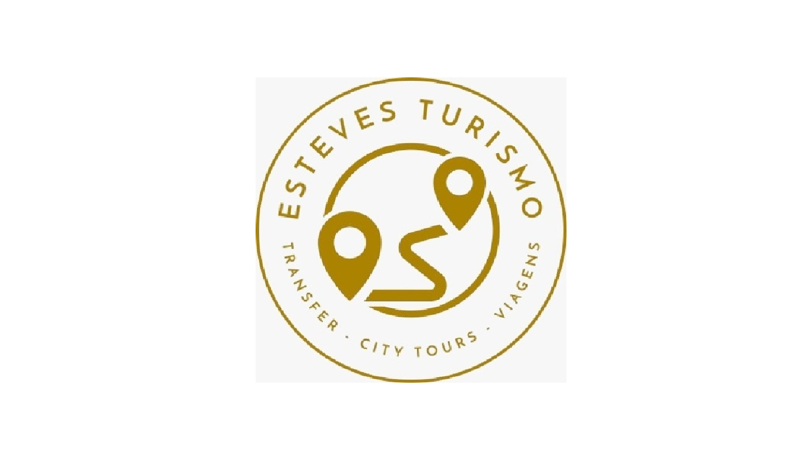
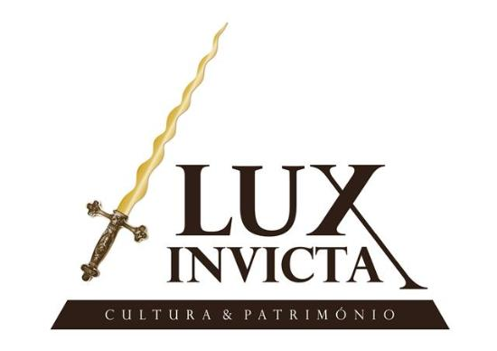

Agências de Turismo em Portugal
Conheça algumas das principais agências que oferecem roteiros encantadores pelos castelos de Portugal. Explore, aprenda e viva a história de perto.

Esteves Turismo
Agência com longa tradição em roteiros personalizados por Portugal, oferecendo viagens confortáveis e visitas guiadas a castelos e monumentos históricos.
Visitar site

Lux Invicta
Especializada em experiências culturais e históricas premium, a Lux Invicta promove circuitos pelos castelos mais emblemáticos e regiões vinícolas de Portugal.
Visitar siteGet Your Guide
Plataforma global que conecta viajantes a tours e experiências únicas, com opções para explorar os castelos portugueses de norte a sul com guias locais.
Visitar site